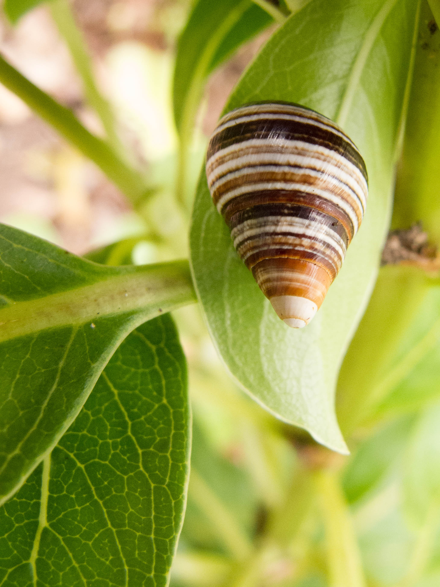

"For roughly a decade, the land snail species Achatinella apexfulva, which used to be plentiful on the Hawaiian island of Oahu, was believed to be down to a single survivor. His name was George, and he lived his last days alone in a terrarium in Kailua, Hawaii, alongside an ample supply of fungi (a food his ancestors liked to scrape off leaves in the wild)."
New York Times
"He was also the last known snail of his kind, the final Achatinella apexfulva. It is said that everyone dies alone, but that was doubly true for George—alone at the end both in his cage and in the world."
The Atlantic
"In 2017, researchers collected a two-millimetre sample of George's foot, which is now kept in storage at San Diego's Frozen Zoo, to be available for possible future cloning attempts."
Wikipedia
